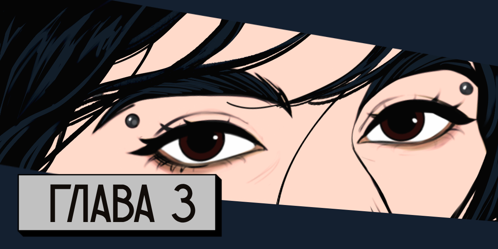

Несмотря на происходящий пиздец, большинство людей продолжали жить и действовать так, как привыкли в жизни. Передвигались днём, мусорили прямо на дорогах, некоторые пытались угрожать или придавливать нас к обочине во время обгона. Каким-то чудом я умудрялась уехать, оторваться от сволочей — что сразу наводило на мысль, что они просто пугали. Или же заранее замечала подозрительно неприятные машины и сворачивала в пролески.
После очередного такого действия я не выдерживаю:
— Есть предложение, — мы как раз заныкались за полосой леса, чтобы с дороги нас было не видно. Пыль на машине кстати: солнечных бликов тоже по минимуму. — Проехать часть пути ночью, чтобы поменьше было этого напряга с другими машинами на дороге. А то люди что-то совсем становятся ебанутыми.
— Ты только заметила? — бурчит Тора, поедая консервированную кукурузу прямо с банки.
— Можно попробовать, — пожимает плечами Настя. — Ты-то сможешь вести?
— С фарами-то, конечно, — удивлённо отвечаю я, припоминая, что ненавижу ездить ночью. Но сталкиваться с людьми и трястись от их угроз хочется ещё меньше. А то есть подозрение, что в какой-то момент мы столкнёмся с менее пугливыми долбоёбами.
— А не привлекут ли они больше внимания? — скептически уточняет Настя, хрустя яблоками, которыми мы и в том числе закупились в Орехово-Зуево.
— Ночью в принципе будет меньше и машин, и людей на дорогах, — начинаю размышлять я. — Всё же инстинкты в нас ещё живы — поэтому мы и сами очкуем передвигаться ночью.
— Справедливо, — заключает Тора, закидывая в мусорный пакет банку. — Главное, не застрять нигде ночью. Вот веселуха потом будет, когда мы не будем видеть куда и по кому бить.
Мы с Настей невесело угукаем, но всё же девки соглашаются с моим предложением.
Не доезжая до ближайшего поселения, я сворачиваю на песчаную дорогу, виднеющуюся за редкими деревьями: по карте вижу, что там есть где заныкаться — лес плотнее и безопасней. Также замечаю, что прилично от нас, в стороне есть кладбище, и, пока мы едем по колдобинам, поднимаю тему о том, действует ли вирус — а теперь это стало официально известно — на уже мёртвых. Настя спорит, что это ещё неизвестно и утверждать о действии вируса не стоит — все может быть. Мы же с Торой иного мнения и думаем, что такой фантастический вариант невозможен… Вот бы так и было.
Останавливаю автомобиль на узкой дороге между двумя стенами леса, отчего некоторые звуки жизни как будто глушатся. Но в то же время шелест листьев слышен настолько отчётливо и успокаивающе, что от этого слегка клонит в сон.
— Так, я подремлю, а вы как хотите, — начинаю я ёрзать на сиденье, пытаясь поудобней усесться.
— Пойду покурю и осмотрюсь, — слышу, как Тора выходит из машины, поэтому спокойно опускаю спинку кресла и кладу на лицо кепку, которую нахожу между сидений.
Через дрёму, которая накатывает из-за жары и лёгкой сытости, слышу, как из машины выбирается Настя.
— Только далеко не уходи, — негромко говорит она Торе. — Мало ли сматываться придётся.
— Само собой, — отвечает Тора.
К летне-пыльному запаху примешивается сладкий аромат сигарет. Пока что Тора находит их в достатке, даже те, которые ей нравятся, с ванильным запахом. Но, чувствую, скоро лафа закончится. Сейчас хоть и начало лета, но не стоит забывать, что зима неизбежна. Как и течение времени. И нужно учитывать, что ситуация с вирусом наверняка не разрешится так скоро.
По машине что-то звонко ударяет, и я тут же подскакиваю, откидывая кепку. Хватаюсь за ключи, торчащие в зажигании и мгновенно завожу машину. Смотрю вбок, но рядом пусто. Назад — никого. Поднимаю глаза перед собой, и замечаю ошарашенные взгляды Торы и Насти: их руки подняты над капотом, на котором лежат травы — наверно сушатся. Там же замечаю, как блестит нож, который наверно и звякнул.
— Отличная реакция, — беззлобно усмехается Настя. Улыбаюсь в ответ, но чувствую, что сердце вот-вот разорвётся от страха и волнения. Ладони противно мокрые
— Может мяту пожуёшь? — уточняет Тора, когда я выбираюсь из машины, предварительно вернув спинку кресла на место и заглушив двигатель. Спина замлела, ноги как будто стали как у слона. Меня эта дорога загонит в гроб раньше, чем любые инфицированные, которые, судя по вбросам в сети, ведут себя максимально бешено. — С такими нервами опасно водить.
— Не настолько у меня тяжёлые неврозы, чтобы запрещать мне садиться за руль, — ворчливо отвечаю я, но предложенный листик мяты забираю и запихиваю в рот.
— Мы её на кладбище нашли, — улыбается Настя, внимательно смотря на меня, но я не перестаю жевать.
— Так даже вкуснее, — снова взяв уже чуть подсушенный листок, я, махнув им, опять его съедаю. Зубные пасты у нас ещё есть, но свежесть после мяты и правда более успокаивающая.
— Да она шутит, — Тора пихает Настю локтём и слегка хмурится, но несерьёзно.
— Вы зачем траву-то собрали? — уточняю я, рассматривая улов: зверобой, молодая полынь, мята и ромашка, немного некрупного подорожника, даже щавель есть — будет нам когда-нибудь вкусный супчик. Если повезёт.
— Да делать было нечего, — Тора пожимает плечами.
— Лично я подумала, что надо бы уже готовится к зиме. Если так и будет продолжаться, то к осени многое пропадёт вообще, в том числе и лекарства. А простуды, знаете ли, не выбирают, кого цапнуть, — важно отвечает Настя.
— Во-от, — Тора обводит руками травы.
— Справедливо, — соглашаюсь и смотрю на солнце, которое опускается к верхушкам деревьев. Деревья на том конце кладбища тихонько переговариваются, навевая жуткое спокойствие.
До потемнения мы успеваем снова перекусить, поболтать и посмеяться, слегка притупив переживания и тревогу, вновь подремать, сделать заметки — кто в блокноте, кто на карте, кто в телефоне, — разложить травы по пакетам и решить, как ехать дальше.
— В Муром, думаю, ехать не вариант, — поджимает губы Настя, смотря на карту, которую я кручу на телефоне. Мы уже в машине, потому что на улице стемнело, и комары как бешеные кусали за каждый миллиметр тела. Свет над головами хоть и тусклый, но явно подсвечивает, как отросли ногти и как лак почти сошёл с них. Надо бы где-нибудь найти косметический магазин.
— Это точно, — хмурюсь я в ответ. Была б моя воля, вообще бы на крупные шоссе не совалась бы. — Как минимум нам придётся проехать по объездной, а дальше…
— Может тут проехать? — Тора как будто читает мои мысли и показывает на небольшую дорогу, которая отходит от объезда Мурома почти сразу за Окой. По ней мы спустимся чуть ниже, южнее основной трассы, но минуем наверняка популярный маршрут.
— Принято, мне нравится, — киваю и делаю пометку на карте, в каком месте поворачивать. Проехать лишнего не страшно: всегда можем вернуться обратно, мы никуда не торопимся, — но бензин нам это не вернёт. Надеюсь, в темноте мы не заплутаем.
Отъезжаем от кладбища без включённых фар и с открытыми окнами, чтобы если что сориентироваться по звуку. Останавливаюсь перед выездом на дорогу. Тишина. Никакого шелеста шин. Только кузнечики стрекочут да редко слышен соловей.
Выезжаю на дорогу и ощущаю сильное волнение. Вот сама предложила дорогу по ночи, а такое чувство, что зря это сделала. Ехали бы днём, хоть и неспокойно, но пытались бы или оторваться, или отбиться потом битой, ладно. Чего меня дёрнуло?..
Луна растущая, ещё и половинки нет, и её света недостаточно, чтобы нормально видеть. Искусственного освещения нет. Разгоняться больше двадцати очень стрёмно. Поэтому я всё же включаю ближний свет и тут же перед машиной мелькает лиса, перебегающая дорогу! Резко вильнув и почувствовав удар по спинке сиденья, у меня получается не зацепить животное. Ноги мои напряжены так, что кажется ударь по ним, и они раскрошатся.
— Давай лучше с фарами поедем, — напряжённо говорит позади меня Тора. Краем глаза вижу, что Настя держится за ручку двери. Киваю.
Дальше едем уже спокойнее и быстрее. Мы встречаем несколько машин с противотуманками, небыстро проезжаем мимо поселений, которые облепливают шоссе, будто мёдом им тут намазано. В некоторых домах я различаю еле видимые огоньки, но в основном всё утопает во мраке.
Едем молча. Надеюсь, что это только мне боязно и нервно, а не все мы молчим из-за этого. Вижу знак, что впереди заправка, но света оттуда никакого не исходит. Но всё равно на всякий случай притапливаю и проезжаю этот отрезок быстрее, и опять включаю фары.
Однако буквально через минуту вижу впереди какой-то свет.
— Там… — начинает Настя, которая тоже всматривается со мной вперёд.
— Угу, — обрываю я её и, сильнее давя на педаль газа, с радостью вновь вырубаю фары.
Вдруг не заметят. Хоть бы не заметили.
Это заправка. Опять. Да кто ставит заправки так часто? Но свет исходит не от неё, а от машин, которые там стоят. Краем глаза замечаю, что вокруг машин расхаживают люди. Высокие и крупные.
— Пять машин, — считает Тора. — Двенадцать мужчин, три девушки. Оружия не увидела. Но не думаю, что они бы светили им без надобности.
Мы резво проносимся мимо них, и через открытое окно я улавливаю тонкий женский смех и музыку. Есть лишь надежда на то, что им будет лень и некогда за нами гнаться.
— Вдруг это просто местные, — неуверенно начинаю я, напряжённо посматривая и в зеркало заднего вида, и в боковое. Тора тоже разворачивается и смотрит в заднее стекло.
— Ага, конечно, — насмешливо явно не соглашается Настя. — Покататься по ночной трассе выехали все вместе.
— А что, — продолжаю я. — Девочек покатать и уломать их хочется в любой момент. Инстинкты — знаешь ли…
— Скорее неумение удержать член в штанах, — обрывает Настя. — Вроде никого. По крайней мере движения никакого нет. Света тем более.
— Правильно, на фига им маленький полик, если у них вон какие джипы были, — лицо Торы появляется между передних сидений.
— Не слушай её, машинка, — поглаживаю я руль. — Ты лучше тех больших и неповоротливых джипов.
Настя и Тора тихонько смеются.
Когда мы добираемся до развязки, я вновь включаю фары. Кружим по съезду, выруливаем на объездную дорогу, и я выдыхаю. Сейчас будет чуть полегче.
Обычно возле объездной редко встречаются дома. На то она и объездная. Поэтому я нажимаю на педаль газа и откидываюсь на спинку кресла, однако дальние фары не включаю, хоть и понимаю, что в обычной жизни точно сделала бы это.
Дорога широкая, радует своей ровностью. Мы проезжаем мимо какого-то поселения, до которого не смогли бы добраться даже если бы захотели: ограждение не позволило бы съехать. Дорога извивается, но ведёт нас вперёд. Позади слышу лёгкое посапывание, и вижу, как впереди бликует указатель, что скоро будет ещё одна развязка, которую мы ещё проскочим.
Мы проезжаем под мостом, после которого как по команде ухудшается дорога: нас начинает подбрасывать на ямках и болтать на ямочных заплатках. Но замедлиться я не успеваю, и среагировать тоже. Колесо попадает в ямку: небольшую, даже почти не ощутимую, — но после неё я различаю характерный цокающий шум и на приборной панеле с громким БЗЫНЬ! появляется уведомление о том, что давление в шине упало.
— Что это было? — тут же возле нас появляется голова Торы.
Съезжаю на обочину, которая благо это позволяет, и с протяжным "а-а-а" отстёгиваю ремень.
— По ходу колесо пробило, — удручённо говорю я и выхожу, чтобы проверить. Настя выходит следом за мной, но останавливается возле задней двери со своей стороны, откуда появляется уже с битой.
Заднее с левой стороны колесо спускает, не быстро, но отчетливо.
— Подай фонарь, — прошу я Тору, которая приоткрыла дверь, но пока не вышла. Она сгибается и под неразборчивую ругань ковыряется под водительским сиденьем, откуда спустя пару секунд достаёт большой фонарь.
На свету колесо выглядит так, будто просто подустало. Как и мы, наверняка. Ехать на таком точно не вариант: пожуём резину, потом её ещё и менять придётся, а без специального оборудования это будет либо невозможно, либо очень сложно. Менять колесо я ещё ни разу не пробовала, но, видимо, всё бывает в первый раз.
— Может хотя бы откатить? — негромко предлагает Настя, которая успела отойти от нас на несколько метров вперёд.
— А там есть куда? — я всматриваюсь туда, но понимаю, что вижу только ограждение. Никакого спасительного съезда, никакого куста или знака. Просто дорога. Предательски открытая и просторная.
— Может дальше будет какой поворот… — Тора тоже смотрит на свет фар, освещающий ограждение и неровности на дороге.
— Блин, я боюсь, что если мы сейчас вот на таком поедем, — тычу я в колесо, которое стало более вялым, — то после этого мы не сможем починить шину. А менять — это…
Запинаюсь, соображая. Можно подкачать и попробовать проехать дальше, да, чтобы заныкаться. А можно не стоять и не тупить, и уже начать что-то делать. Что я, зря, что ли, резиновые саморезы покупала в прошлом году?
— Так, — твёрдо говорю и смотрю на девок. — Значит, Настя, ты со мной, будешь помогать. Тора, посмотри по карте, где тут недалеко есть шиномонажка. И выключи фары, слева внизу от руля переключатель. Сейчас постараемся все починить. На первое время.
Настя кивает и отдаёт биту Торе, которая уходит к водительскому месту, гасит фары, включает свет в салоне и достаёт мой телефон.
Мы с Настей вытаскиваем домкрат, поднимаем бок машины. Ищу саморезы, пока Настя распутывает провода у насоса и подключает его к розетке. И я начинаю шаманить над тем, что знаю в теории и только видела.
Настя светит мне фонарём, и я быстро нахожу рану в шине: здоровенный на вид саморез, но уже железный. Будто специально лежал и ждал нас. Подцепливаю его отвёрткой и с трудом вытаскиваю. Воздух из шины начинает выходить быстрее, уже без свиста, но с ощущаемым напряжением.
Визуально оцениваю дырень (а это очень сложно) и молюсь всем богам, чтобы мои резиновые саморезы подошли. И правда, даже не самый большой на вид подходит так, что закроет дырку целиком.
Где-то позади слышу характерный звук едущего по трассе автомобиля.
— Только не торопись, — размеренно говорит Настя, и я замечаю, что руки у меня трясутся.
Нас три девахи. Посреди шоссе. С подбитой машиной. Как тут не нервничать, правда?
Выдыхаю. Будь что будет. Нам и так уже почти больше недели везёт, и мы ни в какие относительно страшные передряги не попадали. Ну, кроме той, под Москвой, когда… Достаю из колбочки резиновый саморез, проверяю клей по краю — жив. Ну или же мы просто знаем, как себя вести. Что сомнительно. Смешливо фыркаю, понимая, что ни черта мы не знаем, как себя вести, а действуем в основном так, чтобы точно выжить. Нависаю над колесом, приготавливаясь вкрутить эту штуку, чтобы мы смогли и дальше продолжать выживать.
— Что смешного? — уточняет Настя и улыбается.
Держа угрожающе биту, мимо нас проходит Тора и становится, расправив плечи, у открытого багажника.
— Да ещё и недели не прошло, а мы увидели столько, что на всю оставшуюся жизнь хватит.
— Не-не, мне не хватит, я бы и дальше хотела смотреть на происходящее дерьмо, — Настя трясёт фонарём, но я уже попала в прокол, и уверенно закручиваю отвёрткой резиновый саморез. Красиво получается.
— Поддерживаю, — отзывает Тора как раз в тот момент, когда мы слышим приближающийся шорох шин и негромкое тарахтение двигателя.